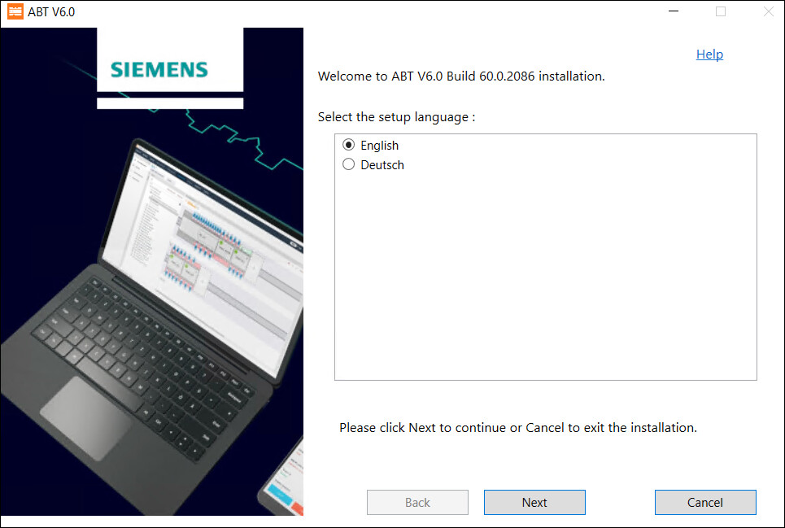
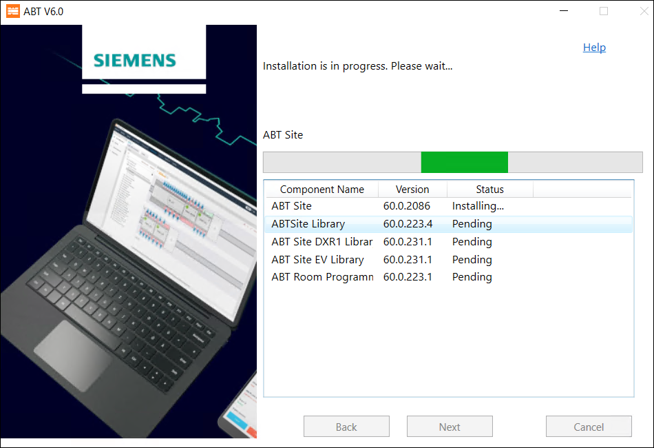
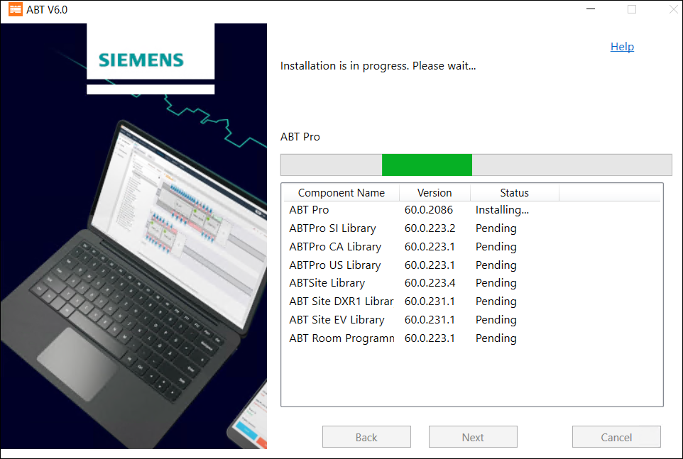
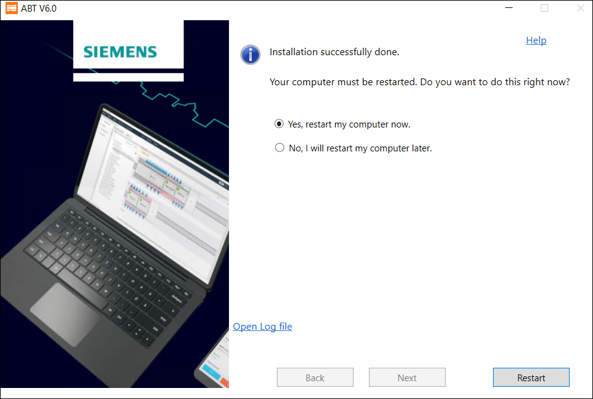

安装 ABT 网站
完成以下步骤来安装 ABT 站点。安装 ABT 站点库以安装其功能：
- In the ABT Installer’s Welcome dialog box, select the language for installation. You can change the default English language, by selecting Deutsch language and click Next.
Note: The language you select here is for ABT Installer only and not the ABT Pro or Site product language. 
- Select the I accept the terms and conditions of the EULA for ABT checkbox after reading the License agreement and then click Next.
- Upon accepting the terms and conditions, the status of the Readme file displays as green tick.
- To install ABT and libraries, select Install and click Next.
- To install ABT Site only, select ABT Site and click Next.
- Select the features you want to install by expanding the ABTSite Library and further expanding ABT Site DXR1 Library, ABT Site EV Library, ABT Room Programming Library and click Next.
Note: If higher version of any of the listed library is available on your machine, then you cannot modify the selected options. Some of the libraries from ABT Room Programming Library and ABT Site EV Library library cluster are selected by default. - In the Tool installation field, you can use the default path or to change the default path click Browse and select the path where you want to install ABT and click Next.
Note: Check that your machine’s hard drive has space that is specified in the Required column of Hard drive space table. To reload the hard drive space check after creating the required space in your machine, click Back and then click Next. You can now see the updated Hard drive space table. - Click Install to install ABT Site. The list of libraries and its content is displayed in the Summary of selection dialog box.
- The progress bar for online installer displays as below.

- The progress bar for offline installer displays as below.

- Select Yes, restart my computer now and click Restart to restart your machine. You must restart your machine after you install the tool.
- The ABT Site is installed on your machine.
